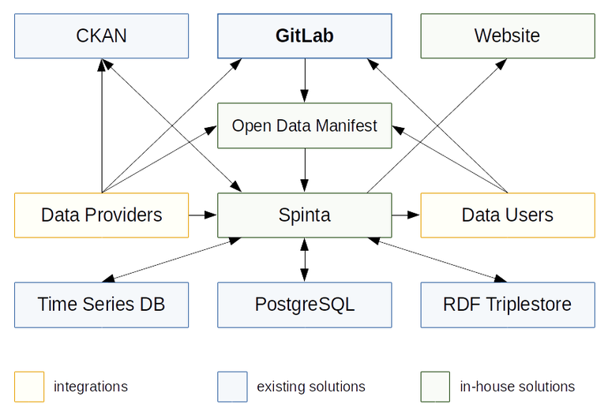

Paskelbtas atvirų duomenų portalo viešasis pirkimas
Jau paskelbtas atvirų duomenų portalo įgyvendinimo viešasis pirkimas. Nusprendžiau skirti vieną dieną ir įdėmiau panagrinėti viešojo pirkimo dokumentus, o taip pat noriu pasidalinti konkretaus techninio sprendimo idėja, kaip visą tai būtų galima įgyvendinti atsižvelgiant į turimą biudžetą ir techninę specifikaciją.
Apie viešąjį pirkimą¶
Terminai ir sumos (visos sumos be PVM):
2019–02–12 paskelbtas viešasis pirkimas
2019–03–19 pasiūlymų teikimo pabaiga
2020–03–27 numatoma projekto pabaiga
860,925.62 € bendra pirkimo vertė
Visą viešąjį pirkimą sudaro trys dalys:
556,859.50 € portalo įgyvendinimas ir 5 partnerių duomenų atvėrimas
117,024.79 € valstybinės darbo inspekcijos duomenų atvėrimas
187,041.32 € užimtumo tarnybos duomenų atvėrimas
Penki partneriai, kurių duomenys bus atverti portalo įgyvendinimo metu:
Užimtumo tarnyba (51 rinkinys)
Švietimo informacinių technologijų centras
Nacionalinė mokėjimo agentūra
Valstybinė darbo inspekcija (30 rinkinių)
VĮ Žemės ūkio informacijos ir kaimo verslo centras
Keista, bet užimtumo tarnybos ir valstybinės darbo inspekcijos duomenų atvėrimas numatytas tiek pirmame, tiek antrame ir trečiame etapuose. Gal būt jie turi labai daug duomenų? Nežinau.
Džiugu matyti, kad vis dėlto didžioji dalis biudžeto yra skirta duomenų atvėrimui, o ne naujo portalo kūrimui. Pačio portalo įgyvendinimo etape, numatytas lėšas reikės dalintis kartu atveriant ir penkių partnerių duomenis. Tai pačiam portalui lieka gan nedidelė biudžeto dalis.
Papildomai bus reikalinga integracija su Europos duomenų portalu, reikės perkelti opendata.gov.lt duomenis į naują portalą, reikės integruoti geoportal.lt duomenų aprašus, reikės integruotis su VIISP diegiant SSO (Single Sign-On). Dar yra paminėta integracija su TDS, bet abejoju ar ji įmanoma, nes bent jau man neteko girdėti, kad su jais būtų bendradarbiaujama, aš pats bandžiau užmegzti kontaktą su TDS specifikacijos rengėjais, bet jie buvo labai užimti ir nenoriai bendravo, atsakymus gaudavau po mėnesio.
Apie techninę specifikaciją¶
Pirmiausia noriu pasidalinti tuo, kas mane nudžiugino, o po to pereisiu prie mažiau džiuginančių dalykų. Buvau nustebęs, kad techninės specifikacijos regėjai atsižvelgė į nemažą dalį mano pastabų. Valio!
Integracija su TDS nėra būtina:
Nors tiesioginės duomenų mainų sąveikos tarp Portalo ir TDS nenumatoma (dėl skirtingų duomenų saugos ir konfidencialumo reikalavimų), tačiau numatytinas sukurtų TDS funkcinių sprendimų atkartojimas įgyvendinant Portalo funkcionalumus pagal pasirinktos informacinių technologijų platformos ir infrastruktūros galimybes.
Padorūs reikalavimai dėl licencijų, kurie turėtų padėti išvengti taip vadinamo vendor lock-in atvejo.
Numatyta, kad tiekėjas turėtų pateikti visą kodo keitimų istoriją (jei teisingai supratau):
ADP kūrimui turi būti naudojama atviro kodo platforma, visi pakeitimai perduodami, aprašomi ir publikuojami Git arba analogiškoje platformoje.
Agile yra privalomas ir tai taikoma ne tik ADP kūrimui, bet ir partnerių duomenų atvėrimui:
ADP turi būti kuriama iteraciniu (angl. agile) būdu.
Dar vienas džiaugsmą keliantis reikalavimas, CI/CD yra privalomas:
ADP turi būti kuriamas remiantis tęstinio integravimo/tęstinio diegimo principais (angl. Continuous Integration/Continuous Deployment), t. y. aktuali ADP versija turi būti visada prieinama testavimui Projekto vykdytojo, Projekto partnerių atstovams ir kitoms naudotojų grupėms.
Įtarimą kelia nurodyta išimtis dėl serverio ir duomenų bazių licencijų:
ADP diegėjas turi pateikti ADP ir transformavimo, bei integracinių komponentų programinės įrangos išeities kodų tekstus bei jų diegimo paketus ir/arba naudojimo licencijas, kurios suteikia teisę Projekto vykdytojui ADP naudoti neribotam naudotojų skaičiui — ši licencija neturi apimti techninės įrangos veikimui būtinų licencijų (serverio licencijos, duomenų bazių licencijų).
Susidaro įspūdis, kad palikta šiek tiek laisvės, kad atskiru pirkimu būtų galima įsigyti labai brangiai kainuojančias Oracle licencijas.
Bendrai visa techninė specifikacija yra per daug detali ir neatitinka Agile principų. Pavyzdžiu yra pateikta lentelė kur labai detaliai surašyta, kaip turi būti apskaičiuojamas duomenų rinkinio atvėrimo prioritetas. Aš pats bandžiau tokią formulę sudaryti remiantis realiais duomenimis, bet formulę keičiau jau kokius 5 kartus ir įtraukiant vis daugiau duomenų, matau, kad formulę reikės dar keisti ne vieną kartą. Todėl gal būt gerai turėti kažkokias gaires, bet turėtų būti palikta ir laisvė priimti kitą sprendimą.
Pateikta daug detalių apie naudotojų roles, surašyti detalūs sąrašai, ką jie gali daryti. Tai sukelia nereikalingų apribojimų.
Bet kokiu atveju, techninė specifikacija nėra labai bloga, todėl išlieka didžiausias klausimas, kas laimės viešąjį konkursą, ar nebus dempinguojamos kainos ar galiausiai ADP projektas netaps tiekėjo įkaitu. Jei tiekėjas bus sukalbamas ir nepiktybinis, tada manau tikrai galime turėti aukščiausio lygio atvirų duomenų portalą!
Mano pasiūlymas¶
Noriu pasidalinti mintimis, kaip įgyvendinčiau atvirų duomenų portalą, įvertinant turimą biudžetą ir reikalavimus specifikacijoje.
Dažniausiai diagramas supranta tik tie, kurie jas paišė, bet manau geriau netobula diagrama, nei jokios diagramos. Mano diagrama atrodo taip: Atvirų duomenų portalo komponentų architektūra
{kind=link}
Visą atvirų duomenų portalą galima pastatyti ant CKAN ir GitLab. GitLab gal būt atrodytų kiek neįprastas sprendimas, bet manau tai tikrai veiktų. Vienintelė dalis, kuriai neradau jokio gero egzistuojančio sprendimo yra duomenų atvėrimo sistema. Į pačią duomenų atvėrimo dalį įeina labai daug specifinio funkcionalumo tokio kaip duomenų inventorizacija, nuasmeninimas, vertimas į vieningą žodyną, normalizavimas į normalinę reliacinę formą, duomenų valymas, duomenų tikrnimas, kokybės gerinimas, duomenų susiejimas, prioritetų vertinimas, paklausos vertinimas, poveikio vertinimas, eksportavimas į įvairius formatus, importavimas iš įvairių formatų ir šaltinių, ir t.t. Yra atskirų sprendimų kurie sprendžia vieną ar kitą dalį, tačiau pilno sprendimo neradau ir ko gero tokio sprendimo nėra. Todėl šiuo atveju manau geriausia pasidaryti savo in-house sprendimą, kas diagramose yra pažymėta žalia spalva.
Veikimo principas būtų toks:
Gan abstrakčiame DCAT lygmenyje su duomenų rinkiniais būtų dirbama CKAN aplinkoje.
Visas darbų organizavimas ir komunikacija vyktų GitLab užduotyse ir užduočių komentaruose. Ten būtų teikiami prašymai, pranešama apie klaidas, balsuojama dėl prioritetų ir pan.
Darbas objektų ir jų savybių struktūrų lygmenyje vyktų GitLab aplinkoje, dirbant su YAML failais, nenaudojant jokių specializuotų naudotojo sąsajų.
Duomenų kokybės gerinimo ir transformavimo dalykai iš dalies būtų padengti deklaratyviais aprašais YAML failuose, tačiau kur deklaratyvaus išraiškingumo nepakankama, būtų rašomi Python skriptai.
Galiausiai visus tuos YAML ir Python skriptus valgytų tarpinė duomenų saugyklą Spinta ir išvalytus duomenis išsaugotų vienoje ar keliose duomenų bazėse, priklausomai nuo duomenų pobūdžio.
Website dalyje būtų atvaizduojamos įvairios ataskaitos apie duomenų atvėrimo esminius rodiklius. Taip pat būtų minimalistinė naudotojo sąsaja duomenims atsisiųsti.
Pasitelkus CKAN ir GitLab, nukristu labai didelė dalis darbų, be to, reikėtų žymiai didesnio biudžeto ir daug daugiau laiko, norint pasiekti CKAN ir GitLab lygį.
Atsisakius naudotojų sąsajų ir perkeliant sudėtingesnę techninę dalį tiesiai į YAML failus, vėl nukrenta didelė dalis gan sudėtingų naudotojo sąsajų kūrimui. Žinoma, dalį YAML failuose pateikiamų duomenų galima būtų pateikti ir per formas, tačiau manau tai turėtų būti pridėtinis funkcionalumas, jei užtektų laiko.
Atsisakius visų minėtų dalykų būtų galima koncentruotis į pačių duomenų atvėrimą ir jų kokybės gerinimą.
Be to, dalį darbų jau esu padaręs, CKAN yra paleistas ir veikia ckan.opendata.gov.lt adresu. Duomenys iš senos opendata.gov.lt sistemos taip pat yra perkelti. Integracija su geoportal.lt jau padaryta, nors reikėtų prie to dar šiek tiek padirbėti, kad atitikti Europos duomenų portalo standartus. Open Data Manifest projektą vystau jau gan ilgą laiką ir prie esamos versijos dirbu nuo 2018 metų rudens. Tarpinę saugyklą, kurią esu pavadinęs Spinta, taip pat jau esu pradėjęs įgyvendinti ir prie to dirbu nuo 2019 metų pradžios.
Iš esmės, didelė dalis komponentų jau siekia bent jau MVP stadiją ir yra paruošti naudojimui, todėl lieka imtis duomenų atvėrimo darbais ir esamų komponentų tobulinimu iteraciniu-inkrementiniu būdu.